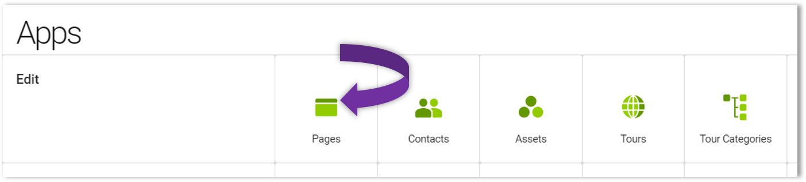

Hello Magnolia
In this beginner tutorial, you will create a simple web page based on a custom-built light module called hello-magnolia. Your light module will provide a page template and a custom quotation component for a web page. You will learn how to get content from a repository and display it on the page. You will develop the page using Magnolia CLI, an npm package which facilitates light development with Magnolia.
Magnolia System requirements
There are certain prerequisites that you must have in order to continue with this tutorial. Basically, you need to be able to install Magnolia and in order to do that, you need:
Java
You must have Java version 8 or higher. Check this by going to your terminal and running java --version. If you get a version number as such below, you’re good to go. If not, you need to get Java for your operating system.
$ java --version
java 14.0.1 2020-04-14
Java(TM) SE Runtime Environment (build 14.0.1+7)
Java HotSpot(TM) 64-Bit Server VM (build 14.0.1+7, mixed mode, sharing)
Node.js and npm
You also need Node.js and npm. If you think you may have them, do a quick check by running node --version and npm --version respectively in your terminal. If you get a version number, you’re good to go. However, if you do not see a version (as below), you will need to install these. Don’t worry, it’s quick and easy.
| If you do not have Node installed, go to Node.js to download and install the latest LTS version. For installation instructions of npm, see npm’s website . |
$ node --version
v12.18.1
$ npm --version
6.14.5)
Git
And finally, you will need Git for version control and pushing local changes to your Magnolia remote repository. You can check this in your terminal by running git --version. If you see a version number (as below), you are good to go. However, if you do not have git, simply download it from Git’s website here.
$ git --version
git version 2.27.0
Get Magnolia
Whew! Now, we can finally install and jumpstart Magnolia.
Let’s go ahead and install Magnolia. Make sure you have the prerequisites completed and we’ll install and jumpstart Magnolia from the command line.
Prerequisites
-
You should have all Magnolia System requirements completed before trying to install Magnolia with the Magnolia CLI.
Procedure
-
Just run
npm install @magnolia /cli -gin your terminal where the-gflag makes Magnolia available to you globally on your machine.
To check if Magnolia was installed successfully, run mgnl --version and you will see the Magnolia CLI version number (as below).
|
$ mgnl --version
Magnolia CLI: 3.1.0 (node.js: v12.18.1)
Jumpstart Magnolia
Now that Magnolia is installed, let’s jumpstart it. Simply, navigate to the directory where you want to download Magnolia. For example purposes, we’ll call this directory magnolia.
-
In your magnolia directory, run
mgnl jumpstart -m <version>. If prompted, choose option3 magnolia-community-demo-webapp. If successful, you see:.... info Magnolia has been successfully setup for light development! .... -
To make sure it’s working, run
mgnl startfrom the magnolia directory and after a few seconds, go to the localhost:8080/magnoliaAuthor in your browser and login as superuser with the password superuser.
|
The
|
Create your first light module and page template
Let’s create our first light module. This brief set of instructions will guide you on creating a simple light module following standard Magnolia processes.
| When creating a name for a module, do not use spaces, accented characters such as é, à, ç, ä, ö, ü or special characters such as slashes like /, \ and so on. |
Prerequisites
-
You must have all of the Magnolia System requirements completed.
-
Of course, you must have downloaded and installed Magnolia. Just a friendly reminder
Create the light module
-
Navigate to the
light-modulesfolder of your Magnolia installation. -
Run
mgnl create-light-module hello-magnolia. This creates the structure below:hello-magnolia/ ├── decorations/ ├── dialogs/ │ ├── components/ │ └── pages/ ├── i18n/ │ └── hello-magnolia-messages_en.properties ├── includes │ └── README.txt ├── README.md ├── templates/ │ ├── components/ │ └── pages/ └── webresources/Magnolia continuously scans the file system folder defined by the
magnolia.resources.dirproperty. In this case, it looks inside the light-modules folder, and registers your module(s) automatically. It detects new and modified templates, dialogs and (web)resources. Cool, huh?
Create the page template
When creating your first page template, you will create:
-
Some basic CSS for styling the page.
-
A page template script file containing FreeMarker directives. Directives make it possible to retrieve the content of some parts of the page from the JCR repository.
-
A page template definition that makes the template available to Magnolia’s authoring system.
-
A dialog definition which defines the editable page properties.
Let’s get started:
-
Create a new css folder in
/hello-magnolia/webresources/. -
Download the CSS file hello-styles.css and save it as
/hello-magnolia/webresources/css/hello-style.css. We will reference this stylesheet in a FreeMarker template script.upon saving, the file becomes a resource available as http://localhost:8080/magnoliaAuthor/.resources/hello-magnolia/webresources/css/hello-style.css. -
Go to the
/hello-magnolia/templates/pages/folder. -
In the pages folder, download hello.ftl and save it as
/hello-magnolia/templates/pages/hello.ftl.A template script defines the output, typically HTML, and is interpreted by a page renderer. The script in this step uses a templating language called FreeMarker. -
Copy the template definition code below and save it to
hello-magnolia/templates/pages/hello.yaml. A template definition gives the template a name and makes it available to the system. It also tells the system which script renders the content.title: hello templateScript: /hello-magnolia/templates/pages/hello.ftl renderType: freemarker dialog: hello-magnolia:pages/hello visible: true -
Copy the following code to a file named
hello.yaml/hello-magnolia/dialogs/pages/. A dialog defined like this allows content authors to add and edit the values of page properties such as windowTitle and title. The content of these properties is stored in the Magnolia JCR repository.label: Page properties form: tabs: - name: tabMain label: hello fields: - name: title fieldType: text i18n: true label: Title - name: windowTitle fieldType: text i18n: true label: Window title actions: commit: class: info.magnolia.ui.admincentral.dialog.action.SaveDialogActionDefinition cancel: class: info.magnolia.ui.admincentral.dialog.action.CancelDialogActionDefinition
Add a page
To add a page using an existing page template, we use the Author instance to create the page and then publish it to our Public instance.
Procedure
-
First of all, make sure you’re in your root
magnoliafolder (the parent directory of yourlight-modulesfolder), and runmgnl startto start Magnolia. -
Go to the App launcher and select the Pages tile to open the Pages app. 
-
Create a new page called hello. Start this by selecting Add page from the Action bar on the right-hand side.
-
In the Add page dialog that appears, choose the hello template as the page template and select Next.
-
In the Page properties dialog, enter Hello Magnolia into the Title and Window title fields.
-
Select Commit.
-
Select Preview page on the right to preview your page.
-
Select Publish. You can then access the page on the Public instance of your Magnolia installation via the URL http://localhost:8080/magnoliaPublic/hello.html.